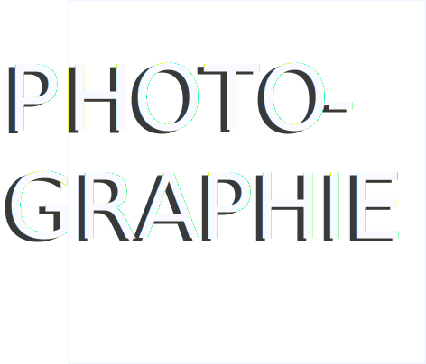
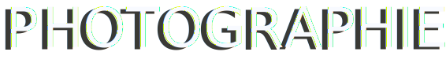
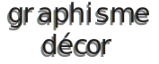

Aurélia Foucher

graphisme
graphisme decor
Ce portfolio que j’ai codé en Vue JS est un aperçu de mon univers artistique et professionnel. Diplômée des Beaux-Arts de Montpellier, j’ai passé la majeure partie de ma carrière professionnelle en tant qu’artiste plasticienne et photographe. J’ai travaillé en restauration, un choix qui m’a permis de financer mes projets artistiques.
PHOTOGRAPHIE. La première partie de ce portfolio est une petite sélection (issue de différentes séries) de mon travail réalisé à la chambre photographique 5x7 ou au polaroïd. J’expérimente la photographie argentique depuis 2015. Aujourd’hui, mes recherches s’articulent autour de ma fascination pour les mondes virtuels et immersifs et de la frontière entre le réel et le virtuel, notamment en prolongeant mon travail photographique grâce à l’IA.
GRAPHISME DÉCOR. Dans cette section, j’ai voulu présenter quelques éléments de graphisme décors que j’ai pu réaliser pendant mon stage sur le LM La mer au loin de Saïd Hamich fin 2023. De nombreux éléments ont été réalisés avec MidJourney. Le reste étant travaillé avec Illustrator et/ou Photoshop. Cette première expérience en tant qu’assistante graphiste m’a vraiment enthousiasmée et stimulée, et c’est pour ça que j’ai suivi une formation infographiste après ça, afin de me perfectionner dans la suite Adobe et viser le métier de graphiste de décoration.
GRAPHISME DÉCOR. Dans une deuxième partie, j’ai choisi de montrer quelques projets réalisés pendant ma formation Infographiste (2024), notamment une fausse campagne de pub pour Haribo réalisée en partie en IA. Enfin, une affiche de film que j’ai créée, retouchée et mise en page.
WEB. Tout au long de mon parcours, j’ai été fascinée par le monde du virtuel, de l’immersif, et en particulier par la réalité virtuelle. Les possibilités infinies qu’offre le monde numérique m’ont attirée et j’ai vu le développement web comme une extension naturelle de ma passion pour l’art visuel. C’est cette passion pour les univers virtuels, mais aussi pour les langages, qui m’ont poussée à m’orienter vers le développement web. Pour moi, l’apprentissage des langages informatiques était un pas indispensable pour intégrer le numérique à mes projets artistiques.
PHOTOGRAPHIE. Extraits de mon travail personnel à la chambre photographique et au polaroïd. GRAPHISME DÉCOR. Extraits de mon travail de graphisme sur le long métrage La mer au loin et pendant ma formation. WEB. Extraits de mon travail de développement web à travers quelques réalisations (site et applications).